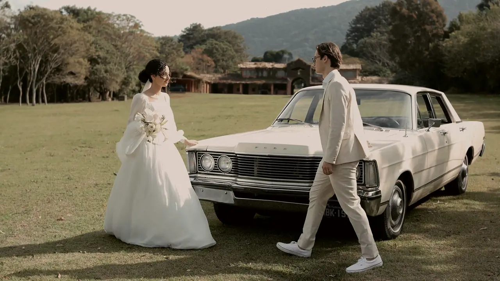

Film 01 · 6:10
The garden, all day
A dress hung under the arch at seven, a first look at the same arch before lunch, and a guitar at the ceremony nobody was told about. This is the film the home page is cut from.
- Booked
- Full Day
- On the day
- 2 shooters, 11 hours
- Delivered
- Week 7: the film, the ceremony and the speeches in full